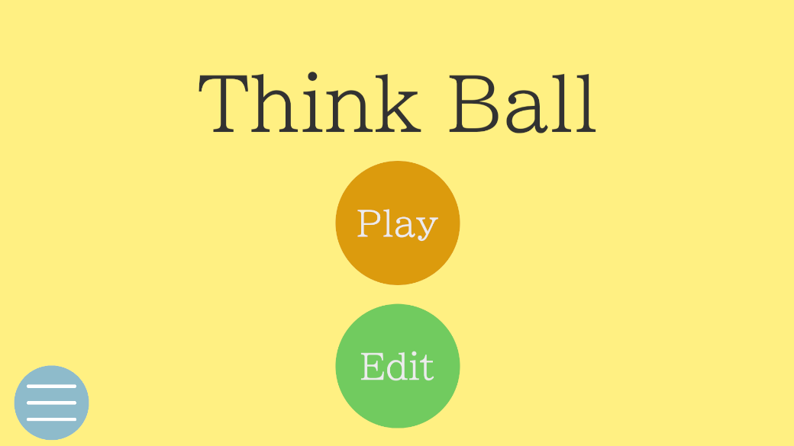

Overview
Unityで制作した物理演算2Dパズルゲームです。
Information
- 制作期間：半年
- 制作人数：個人制作
- 使用技術：Unity (URP) / C# / JSONBin
Implemented Features
- インゲームステージエディタ（ブロック配置・パラメータ設定・保存・読み込みをゲーム内で完結）
- インターフェース・抽象クラスによる拡張性の高い設計
- JSONでのデータ管理
- カーソルシステム・UIアニメーション
Point
シンプルで直感的に操作できるよう工夫しました。
ゲーム内完結のステージエディタが最大の特徴です。
新しいギミックを追加してもコアロジックへの変更が最小限で済むよう、
抽象クラスとインターフェースで設計を統一しました。